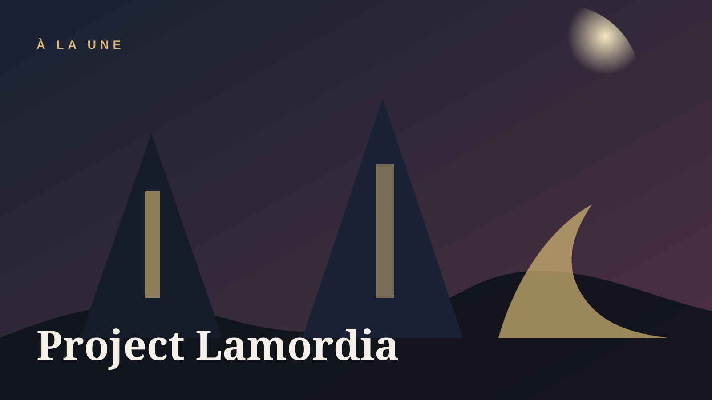

Project Lamordia propose un gothique plus industriel, plus clinique, plus risqué
Lamordia n’a jamais été le domaine le plus confortable de Ravenloft. C’est précisément ce qui rend son retour intéressant : il permet de déplacer le gothique du château vers le laboratoire.
Le premier effet de Project Lamordia, c’est de rappeler que Ravenloft n’est pas seulement un décor de nostalgie. Lamordia a toujours porté un sous-texte différent : moins l’obsession de la lignée et de la malédiction que celle de l’expérience, de la chair réparée, de l’intelligence dévoyée et de la science comme orgueil.
Le techno-horror fonctionne ici quand il ne ressemble pas à une simple couche d’esthétique. L’électricité, les dispositifs, les corps transformés et les lieux d’expérimentation doivent produire du jeu : dilemmes, obsession de la réparation, frontière mouvante entre progrès et profanation.
Tout se jouera donc dans la traduction ludique. Une belle ambiance ne suffit pas. Il faut des situations dans lesquelles les personnages ressentent que le monde est traversé par cette tension entre maîtrise du vivant et perte de contrôle.